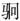

三
历史的这个特别段落，从南京陷落之日即告开启。
先讲一段宜兴卢家的故事。那是个庞大悠久的家族，“族人千计”[10]，崇祯十一年末因抗清壮烈阵亡的儒帅卢象升，便出卢家。卢象升有个弟弟卢象观，癸未（1643）进士，此时里居家中。南都变故后，象观即散家财，“聚乡兵千人”，准备起义。很快，宜兴城被清军占领，但广阔乡间仍未为其所控。卢家在乡下，距城六十里，象观举兵抗清消息传出后，短时间当中“乡镇拥众悉归象观，象观遂得乌合数万”。“乌合”，是指起义者完全是未经训练的民众。同时，哥哥卢象升的几个旧将，闻讯“亦归之”。象观决计领着这“乌合之众”，收复宜兴城。他从探报得知，城内“无兵，可取”，便“身率三十骑疾趋”，一马当先，大队人马反在其后。城内确实无兵，但原因是清军主要为骑兵，“驻营城外平原，盖利于驰突也”。有经验的卢象升旧将，听到象观突出的消息大惊：“书生不晓兵事，身为大帅，轻至此乎？”却已不及阻止，“即选精骑三百赴援”。象观等三十人虽然比较轻松突入城中，外营清兵却随后拥来。象观只能在曲巷与敌周旋，援兵赶来时，他已“颊中二矢”。杀出城，一路都被清军追击。象观等打算从水路退入太湖，最后没有成功，“众寡不敌”，“左右欲退，已扬帆矣”，但已抱死志的象观“持刀断索”，“曰：‘誓死于此！’不去，遂被杀。”反抗中仅卢家一家，“昆季子侄死者凡四十五人”。
这故事，在乙酉之变后清军克取东南（苏、皖、浙）的过程中，有相当代表性：一、是纯自发的没有政府背景的抵抗，类似之事清军在渡过黄河前简直未遇一例，眼下却于各处城乡普遍遭逢；二、抵抗几乎全由士绅（诗书传家的知识精英）带头，他们在民族存亡关头以及国家或朝廷完全崩解的背景下，毁家纾难，倾其所有，献于抵抗事业；三、一般民众对于士绅所持道义不仅认同、呼应，且接受和追随他们的领导；四、这种反抗谈不上任何组织和规划，毫无秩序，既经不起理性的推敲，也不宜加以理性的质疑；五、所有参与者都未问成败，只为了在国破之际去证明点什么；至于带头之士绅，恐怕不是未问成败，而根本是在明知必败、抱以死志的心境中，毅然行此。对此，计六奇在讲述一桩桩类似事迹后，特写一条“总论起义诸人”，其云：
夫以国家一统，而自成直破京师，可谓强矣。清兵一战败之，其势为何如者？区区江左，为君为相者必如勾践、蠡、种，卧薪尝胆，或可稍支岁月……至是一二士子率乡愚以抗方张之敌，是以羊投虎，螳臂当车，虽乌合百万，亦安用乎？然其志则可矜矣，勿以成败论可也！[11]
这番话，既不失理性，同时也不失正确。
《小腆纪年附考》第379页至第396页，以近二十页篇幅，记述了东南各地二十七起类似卢象观那样的自发抵抗。时间范围主要自乙酉年六月起，至闰六月二十七日亦即唐王朱聿键即皇帝位于福州止；这段时间，明朝失去国都、皇帝被俘，政治上处于短暂空白，故一切抵抗均为民间之自发、自主现象。所涉及地点，依今日区域，包括江苏吴县、吴江、武进、苏州、常熟、宜兴、江阴、无锡、常州、昆山、太仓，上海嘉定、松江，浙江余姚、绍兴、富阳、宁波、东阳、嘉兴、余杭、建德、长兴，安徽休宁、宁国、泾县、青阳、池州……将这些地名相互联缀，我们眼前可以浮现一张几乎完整的东南地图。而在每个地方，都各有卢象观式人物，仅自声名较著者言，如沈自炳、沈自兄弟之于吴县，吴易之于吴江，顾杲之于无锡，沈犹龙、陈子龙之于松江，钱肃乐之于宁波，侯峒曾、黄淳耀之于嘉定，金声之于休宁，吴应箕之于池州……他们的故事，简直出自同一个模式：破家举义、抱必死志、无望而战、殉国以终。两个多月，唯一组织较好而显得不那么徒然送死的抵抗，便是阎应元、陈明遇等领导的江阴抗清，虽然最终仍不免于失败、惨遭屠城，但这弹丸小城却拖住清军二十余万八十天，令其三王、十八将毙命[12]。
自从吴三桂引清军入关，先从东到西、复由北而南，在同一个中国，清军遭遇却像杜甫的一句诗：“阴阳割昏晓。”北南之间，反差有如黑白。在北方，清军长驱直入、一路坦途，波澜未兴而江山易手；过了淮河尤其来到江南，惨烈抵抗陡然而起，义夫壮士络绎不绝。这种奇怪的差异，如今历史教科书绝口不提，更不会探讨，但在当时却是极为突出的现象，作为入侵者的满清感受非常强烈，乃至“不解”——《大义觉迷录》中，雍正皇帝曾以一事质问曾静：
奉上谕：据山西巡抚石麟奏称：“晋省绅士百姓，愿将军需应用之驼屉、苫毡、绳索三万副，从本地自备车骡运送，至归化城交收。臣等遵旨，令地方官给价雇送。而各属士民，挽车策骡，争先装载，给以脚价，感激涕零，稽首称谢，不肯领取。急公效力，旷古所稀”等语。着将此折令杭奕禄发与曾静看，并讯问曾静：湖南、山西同在戴天履地之中，何以山西之民踊跃急公，忠诚爱戴，实能视朕为后；而湖南之民，乃有猖狂悖逆、肆恶扰乱之徒如曾静等，至于视朕如仇？此朕所不解。着讯取曾静口供具奏。[13]
同是中国，山西人对清朝那么“忠诚爱戴”，湖南却出了曾静这种“猖狂悖逆、肆恶扰乱之徒”，雍正对此“不解”。而我们知道，曾静私淑的老师吕留良是浙江人，换言之，十八世纪上半叶已过去一半以上时间，从浙江到湖南一线的南中国，反清意识仍很顽固，反清的思想也特别有市场。从这个事实，回看当年满清初入中国，更能体会南北两地态度当何等悬殊。所以雍正的不解或困惑，颇为自然——如非一国，山西、湖南人态度截然不同，并无可诧异之处；既是同一国家，都曾为明朝子民，怎么一个可以很快地春风化雨，一个却如顽石那样难以感化？这其实是个很深的问题，雍正说他“不解”，可能真，也可能是为了揭批曾静故意装成“不解”（从《大义觉迷录》看，他对中国相关的思想渊源，不乏了解）。倒是当今中国人也许真的大多不甚了了。以现在贫乏的话语，当时山西、湖南之间这种差别，恐怕都用爱国、不爱国来表述。如这样，不光委屈、冤枉山西人，对于另一些人的顽固反清，也全不在点子上。山西人非“不爱国”，只是不大爱朝廷而已。而湖南人或南中国人的排满，根子上也不是爱朝廷。面对满清，南北两地态度反差，除开生存状况相对的足与不足，顶顶主要的还是历史—文化的原因。